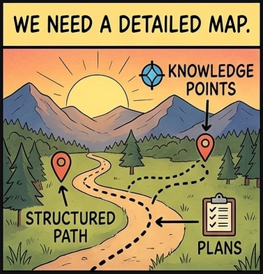
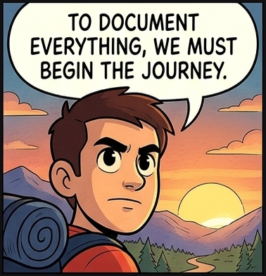
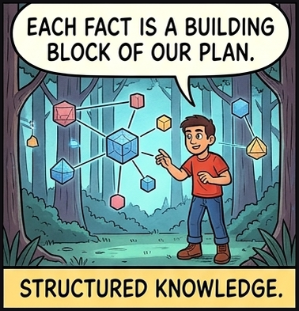
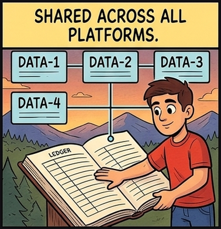
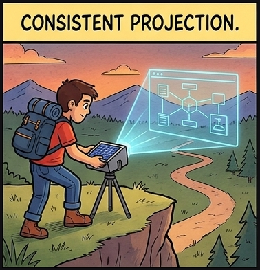
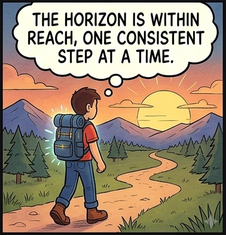

Vom Modell, das die Werkzeuge überdauert – von der Business-Architektur bis zum Code.
Software Engineer & Architekt
Drei Bereiche prägen meine Laufbahn: Softwareentwicklung, Methodik und IT-/Enterprise-Architektur. Ich kenne alle drei.
Das Ziel ist immer die Durchgängigkeit von der Fachlichkeit bis zur Umsetzung – nur war der Weg dorthin lange teuer und schwer.

Das Wesentliche erfassen, das Unwichtige weglassen. Das ist die eigentliche Kunst.
Seit rund 15 Jahren mein Anspruch an jedes Modell.

UML · SysML · eigene DSL
Mächtig – aber schwer, spezialisiert, teuer. Nur wenige können es lesen.
KI versteht natürliche Sprache.
Mit dem richtigen Meta-Modell: die Fakten als Markdown – günstig zu erstellen und zu pflegen, lesbar für alle.
Dieselbe Klarheit – viel weniger Reibung.
Eine strukturierte Wissensbasis – ich nenne sie das Mental Model.
Fakten als Markdown · strukturiert durch ein Meta-Modell · maschinenlesbar

Echtes Modell aus einem Projekt von mir – Markdown + Mermaid
Jeder Begriff auf einen Satz gebracht – nicht mehr, nicht weniger.
Keine Dokumentation, sondern ein Artefakt zum Validieren – damit Änderungen günstiger und sicherer werden.

Ein Modell wie dieses gibt der KI den richtigen Kontext: Es eliminiert Halluzinationen nicht – aber es verkleinert den Raum, in dem sie raten muss, und verschiebt sie von Raten zu fundiertem Arbeiten. Je sauberer die Struktur, desto besser der Kontext. In der Praxis: das Mental Model als Kontextschicht für KI-Assistenten.

Von „no big design up front“ zu spec-first – weil KI Spezifikationen schnell und bezahlbar macht.
Jahrelang war Vormodellieren zu teuer, also verzichtete Agile bewusst darauf. Diese Rechnung hat sich geändert.
Der Anspruch bleibt: die essenzielle Komplexität erfassen. Nur steht der Weg heute allen offen.
Deshalb baue ich bis heute so: nah am Code, aber mit dem Modell im Kopf. Danke.
